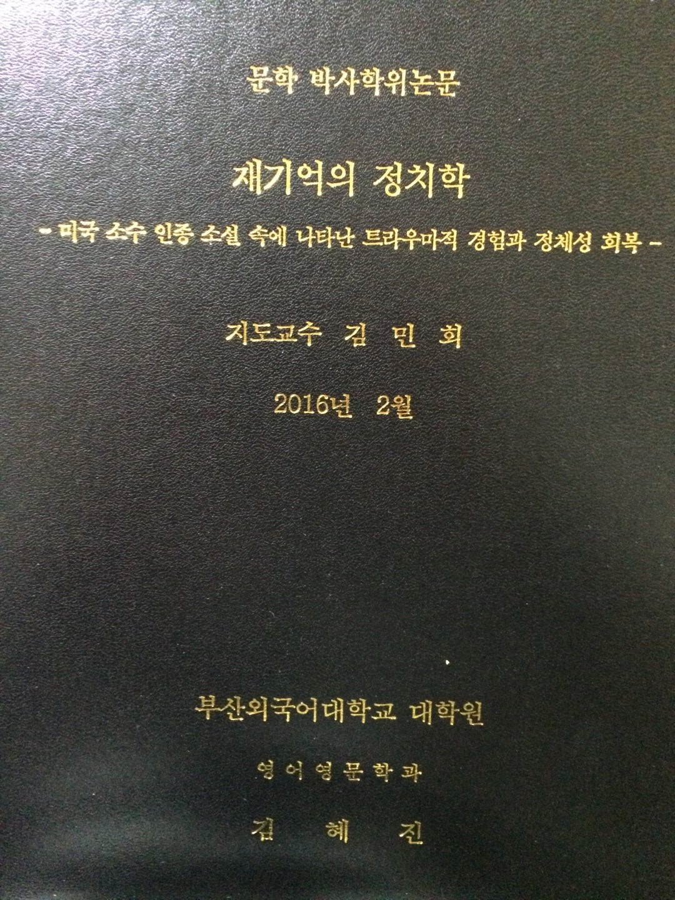

대학 시절 무엇을 하셨나요?
공부를 하는 게 너무 좋아서 열심히 공부했어요. 물론 놀기도 열심히 놀고요. 그러다 플로리다의 보카라톤으로 유학을 갔죠.
미국 대학교에서는 주로 어떤 걸 공부하셨나요?
문학과, 그중에서도 미국소설 쪽을 주로 공부했어요. 원래 독서를 좋아했어요. 그 중에서도 소설은 자세한 설명이 나와있어 좋아해요. 저는 소수, 약자의 목소리에 관심이 많은데 그런 것들이 잘 나타나 있는 게 미국소설이라고 생각해요. 미국이라는 나라가 굉장히 매력적인데요, 긍정적인 부분만 있는 것이 아니라 인종차별등의 문제도 있죠. 미국소설에서 그런 양면성을 다 볼 수 있어요.
유학시절의 동안 기억에 남는 것이 있으신가요?
오렌지 치킨과 같은 미국식 중국 음식이 맛있었어요. 유학생 시절에는 돈이 없으니 치킨, 볶음밥, 음료를 싸게 먹는 중국집에가서 맛있게 먹었죠. 미국에 만복이라는 중국집이 기억에 남는데요, 조금 비싸서 자주는 가지 못했던 중국집인데 김치도 나오고 깐풍기가 제가 인생에서 먹은 것 중 제일 맛있었어요. 학생들도 미국이라는 광활한 대륙에 한 번 쯤은 경험 삼아 가봤으면 좋겠어요.
유학 시절 힘들었던 경험은 무엇인가요?
미국에 있을 때는 아무래도 언어적인 문제가 있다보니 공부할 때만큼의 많은 텍스트를 읽어낼 수도 없었고요. 그런 부딪침이 있어 힘들었지만 그래도 즐거웠어요.
한국에 돌아와서는 어떻게 시간을 보내셨나요?
미국에 있다 한국에 돌아와서요? 그냥 즐거웠어요. 워낙 열심히하고 외향적인 성격이다보니 놀 때는 확실하게 놀고 공부할 때는 정말 열심히 했죠. 공부를 계속해야된다는 생각을 가지고 있었기 때문에 대학원에 진학했어요.
대학원에서는 어떤 걸 연구하셨나요?
미국소설(20C 미국 소설, 미국 내 소수 인종과 여성의 목소리에 대한 연구)에 대해 연구했어요.
학업 이외에 힘을 쏟은 것을 알려주세요.
봉사활동을 했어요. 시각장애인 생활, 학습 도우미 활동을 했었거든요. 그런 활동을 하다보면 마음가짐이 다르잖아요? 내가 돕는다는 생각보다 이들과 함께 갈 수 있겠다라는 마음도 들고요. 또, 어떻게 대처해야 할지를 충분히 내가 재빠르게 습득할 수 있고 그럼 그들과 함께 같이 공존해서 살아갈 수 있잖아요. 사실 유학 시절의 교수님이 저에게 사회복지로 갔으면 좋겠다고 하셨는데 그냥 관심 있어 하는 일이 직업이 되면 스트레스를 받을 거 같아서 직업으로는 생각하지 않았어요.